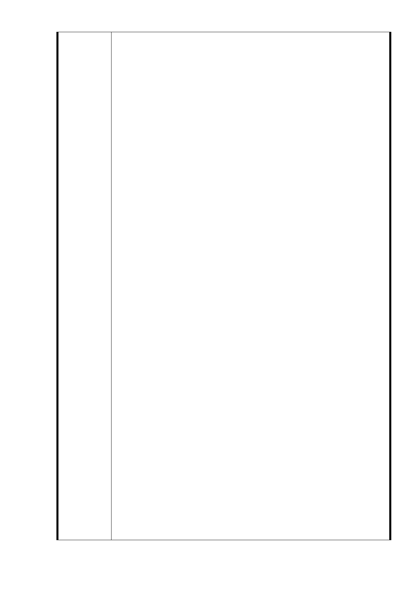

BOT 為唯一解決之道，反而造成「交換公有土地使用權、讓
財團賺錢卻讓全民承擔 BOT 失敗風險、珍貴公有社會與環境
資源不增反減」的公部門角色顛倒、資源扭曲錯置之怪現象
。
3. 預期效益：
創造社福多元價值，使廣慈基地回歸社福主軸用地，並成為
幸福生養示範基地。
4. 內容說明：
甲、 保有歷史記憶結合社區營造幸福生養友善環境
廣慈基地原即為社福用地，隨著人口老化與少子化等問題
日益浮現，更應該保留，園區規劃還是可以區分三大類別
：社福設施與住宅、商業設施、以及公園，但內容精神是
以社福生養為出發：
社福設施：社福機構進駐，並設置如公設老人安養中心
、坐月子中心、托兒所、幼稚園、育幼院、兒童圖書室
等，並可搭配早療機構與社區婦產專科醫療駐診。
幸福住宅：佔地僅 6.5 公頃的園區，已有大比例的社福
設施之下，所規劃的住宅設施應以急難救助家庭安置、
中途之家、服務換宿、國際青年旅社等為主，目的是在
提供急難救助、輔導、以及服務與文化交流。若是長期
租賃或是公營住宅等，應另覓其他更大基地或活化閒置
建物進行之，而讓廣慈園區保有社福意涵與幸福生養主
題之純粹。
商業設施：搭配捷運預定出口於福德街側規劃，應設回
饋機制規範如下點說明。
公園：以現有樹木就地保留的方式，規劃基地環狀與區
域間綠帶。
乙、 條件式的資源享受者回饋機制
規範上述所有園區規劃都應設置此回饋機制規範：
進駐業者，除園區租金外，應提撥稅前營利之一定比例
繳交社福與環境維護基金，並雇用一定比例之弱勢族群
員工以及正接受園區急難救助安置或中途輔導之個案。
接受園區急難救助安置或中迷輔導的個案，得透過園區
仲介安排於進駐商業店家中實習工作，惟工作所得於一
年或一定期限內須逐月增加扣繳至市場合理租金行情
，並鼓勵其於期滿或身心已適應良好後離開園區，以讓
- 51 -